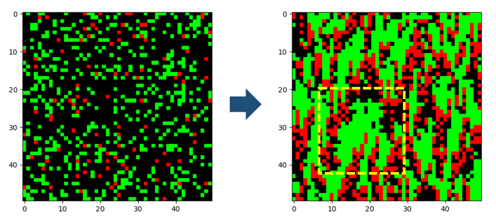

Co-Evolution of Predator-Prey Ecosystems by Reinforcement Learning Agents [1]
This study utilises multi-agent reinforcement learning (MARL) approaches to simulate co-evolution mechanisms in predator-prey ecosystems, in which agents show a biologically plausible approximation of their co-evolution over multiple generations in nature.

Left: Initial random location of predators and prey.
Right: Emergence of swarming among predators and prey.
This work however only uses a very simplified 2D environment without vision.